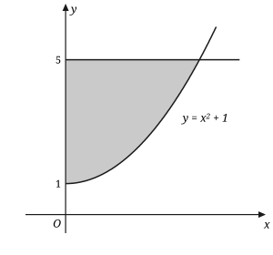
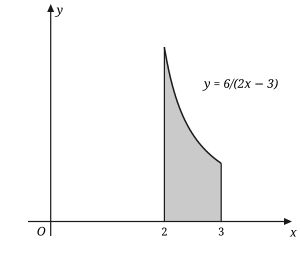

<script src="/assets/redirect.js"></script>
<section class="theory" data-section="P1-9.9">
<h2>9.9 Volumes of revolution</h2>
<p class="src">Based on Cambridge International AS &amp; A Level Mathematics: Pure Mathematics 1 Coursebook (Sue Pemberton, series editor Julian Gilbey), Chapter 9 Integration, printed pp.268–275. Own wording and new numbers, following the coursebook formulae for volumes of revolution about the x-axis and about the y-axis, and the volume between two curves.</p>
<p class="key-words"><strong>Key words:</strong> <em>volume of revolution</em>, <em>solid of revolution</em>, <em>definite integral</em></p>
<h3>Rotating about the x-axis</h3>
<p>When the region under \(y=\mathrm{f}(x)\) from \(x=a\) to \(x=b\) is rotated through \(360^\circ\) about the \(x\)-axis, it forms a <strong>solid of revolution</strong>. Each thin slice is a disc of radius \(y\), so the <strong>volume of revolution</strong> is</p>
<p>\[V=\pi\int_a^b y^2\,dx.\]</p>
<h3>Rotating about the y-axis</h3>
<p>For rotation about the \(y\)-axis between \(y=c\) and \(y=d\), the radius of each disc is \(x\), so</p>
<p>\[V=\pi\int_c^d x^2\,dy,\]</p>
<p>with \(x^2\) written in terms of \(y\) from the equation of the curve.</p>
<h3>Between two curves</h3>
<p>If the region between two graphs is rotated, find the volume from the outer graph and subtract the volume from the inner graph: \(V=\pi\displaystyle\int_a^b\bigl(y_1^2-y_2^2\bigr)\,dx\). Square each \(y\) separately: \(y_1^2-y_2^2\) is not \((y_1-y_2)^2\).</p>
<div class="worked-example">
<h4>Worked example 1: About the x-axis</h4>
<p class="src">Coursebook, 9.9, volume about the x-axis. New numbers.</p>
<p>The region under \(y=x^2+1\) from \(x=0\) to \(x=1\) is rotated through \(360^\circ\) about the \(x\)-axis. Find the exact volume.</p>
<ol class="steps">
<li>\(V=\pi\displaystyle\int_0^1(x^2+1)^2\,dx=\pi\int_0^1(x^4+2x^2+1)\,dx\) <span class="mark">M1</span></li>
<li>\(=\pi\Bigl[\dfrac{x^5}{5}+\dfrac{2x^3}{3}+x\Bigr]_0^1\) <span class="mark">A1</span></li>
<li>\(=\pi\Bigl(\dfrac{1}{5}+\dfrac{2}{3}+1\Bigr)=\dfrac{28\pi}{15}\) <span class="mark">A1</span></li>
</ol>
<p class="final"><strong>Answer:</strong> \(\dfrac{28\pi}{15}\)</p>
</div>
<div class="worked-example">
<h4>Worked example 2: About the y-axis</h4>
<p class="src">Coursebook, 9.9, volume about the y-axis. New numbers.</p>
<p>The region between \(y=x^2\) for \(x\ge0\), the \(y\)-axis and the line \(y=4\) is rotated through \(360^\circ\) about the \(y\)-axis. Find the exact volume.</p>
<ol class="steps">
<li>\(x^2=y\), so \(V=\pi\displaystyle\int_0^4y\,dy\) <span class="mark">M1</span></li>
<li>\(=\pi\Bigl[\dfrac{y^2}{2}\Bigr]_0^4=8\pi\) <span class="mark">A1</span></li>
</ol>
<p class="final"><strong>Answer:</strong> \(8\pi\)</p>
</div>
<h3>Common mistakes</h3>
<ul><li>Forgetting to square \(y\), or forgetting the factor \(\pi\).</li><li>Using \(x\)-limits for a rotation about the \(y\)-axis.</li><li>Squaring the difference \((y_1-y_2)^2\) instead of finding \(y_1^2-y_2^2\).</li></ul>
<h3>Past paper</h3>
<p class="src">9709/12/F/M/20 Q3, official QP and official MS.</p>
<p></p><p>The diagram shows part of the curve with equation \(y=x^2+1\). The shaded region enclosed by the curve, the \(y\)-axis and the line \(y=5\) is rotated through \(360^\circ\) about the \(y\)-axis.</p><p>Find the volume obtained. [4]</p>
<details><summary>Mark scheme</summary>
<ol class="steps">
<li>\((\pi)\displaystyle\int(y-1)\,dy\) <span class="mark">M1</span> Official MS: *M1, SOI; attempt to integrate x² or (y − 1).</li>
<li>\((\pi)\Bigl[\dfrac{y^2}{2}-y\Bigr]\) <span class="mark">A1</span> Official MS: A1.</li>
<li>\((\pi)\Bigl[\Bigl(\dfrac{25}{2}-5\Bigr)-\Bigl(\dfrac{1}{2}-1\Bigr)\Bigr]\) <span class="mark">M1</span> Official MS: DM1, apply limits 1 → 5 to an integrated expression.</li>
<li>\(8\pi\) <span class="mark">A1</span> Official MS: A1, 8π or AWRT 25.1.</li>
</ol>
</details>
<h3>Past paper</h3>
<p class="src">9709/12/M/J/12 Q1, official QP and official MS.</p>
<p></p><p>The diagram shows the region enclosed by the curve \(y=\dfrac{6}{2x-3}\), the \(x\)-axis and the lines \(x=2\) and \(x=3\). Find, in terms of \(\pi\), the volume obtained when this region is rotated through \(360^\circ\) about the \(x\)-axis. [4]</p>
<details><summary>Mark scheme</summary>
<ol class="steps">
<li>Integral of \(y^2=\dfrac{-36}{(2x-3)}\ldots\) <span class="mark">B1</span> Official MS: B1 B1 for integral of y² = −36/(2x − 3) ÷ 2; allow the 2nd B1 independent of the 1st; this is the first mark.</li>
<li>\(\ldots\div2\) <span class="mark">B1</span> Official MS: second B1, for ÷ 2.</li>
<li>Use of limits 2, 3 <span class="mark">M1</span> Official MS: M1, used as 2 to 3 or 3 to 2 in the integral of y².</li>
<li>\(12\pi\) <span class="mark">A1</span> Official MS: A1, 12π or 37.7; co (uses area 0/4; no π max 3/4).</li>
</ol>
</details>
<div class="quick-check">
<h4>Quick check 1</h4>
<p>The region under \(y=2x\) from \(x=0\) to \(x=3\) is rotated through \(360^\circ\) about the \(x\)-axis. Find the volume.</p>
<details><summary>Worked solution</summary>
<ol class="steps"><li>\(\pi\displaystyle\int_0^34x^2\,dx=\pi\Bigl[\dfrac{4x^3}{3}\Bigr]_0^3\)</li></ol>
<p class="final"><strong>Answer:</strong> \(36\pi=113\) (3 s.f.)</p>
</details>
</div>
<div class="quick-check">
<h4>Quick check 2</h4>
<p>The region under \(y=\sqrt{x}\) from \(x=0\) to \(x=4\) is rotated through \(360^\circ\) about the \(x\)-axis. Find the volume.</p>
<details><summary>Worked solution</summary>
<ol class="steps"><li>\(\pi\displaystyle\int_0^4x\,dx=\pi\Bigl[\dfrac{x^2}{2}\Bigr]_0^4\)</li></ol>
<p class="final"><strong>Answer:</strong> \(8\pi=25.1\) (3 s.f.)</p>
</details>
</div>
<div class="quick-check">
<h4>Quick check 3</h4>
<p>The region between \(y=x^2+3\) (\(x\ge0\)), the \(y\)-axis and \(y=5\) is rotated through \(360^\circ\) about the \(y\)-axis. Find the volume.</p>
<details><summary>Worked solution</summary>
<ol class="steps"><li>\(\pi\displaystyle\int_3^5(y-3)\,dy=\pi\Bigl[\dfrac{y^2}{2}-3y\Bigr]_3^5\)</li></ol>
<p class="final"><strong>Answer:</strong> \(2\pi=6.28\) (3 s.f.)</p>
</details>
</div>
</section>
